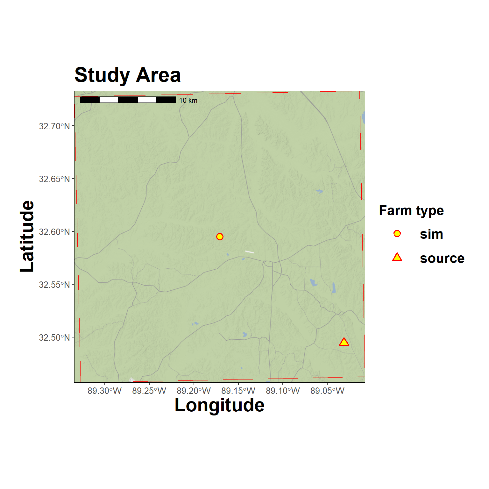
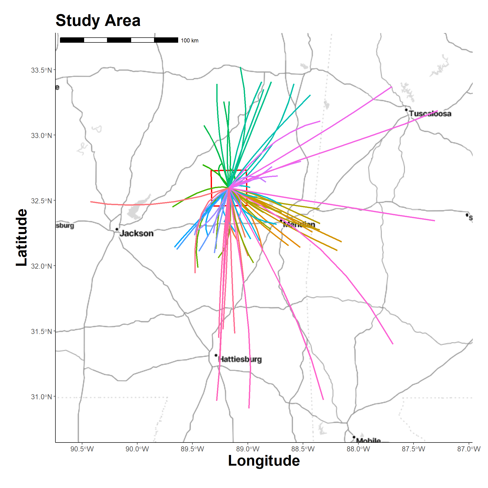
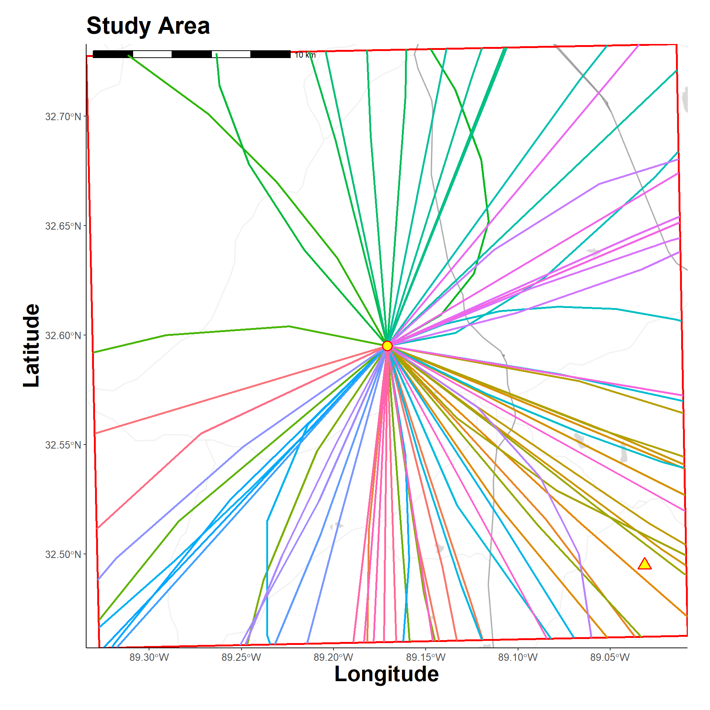
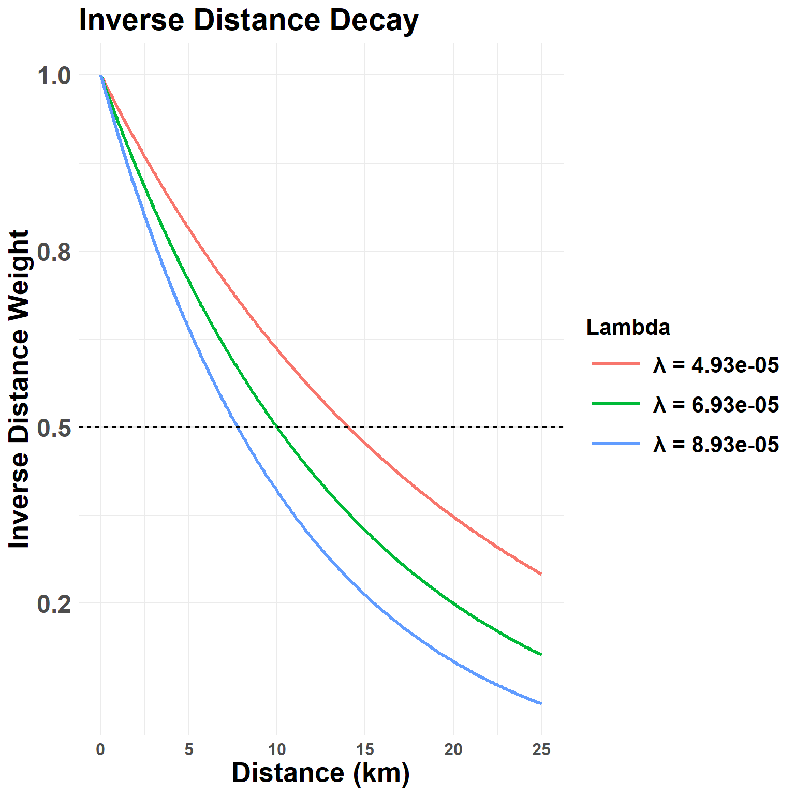
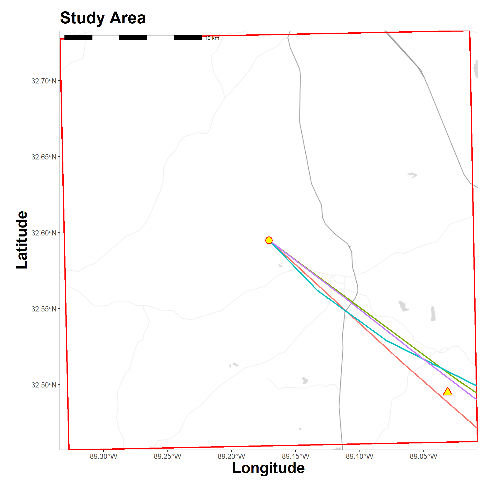
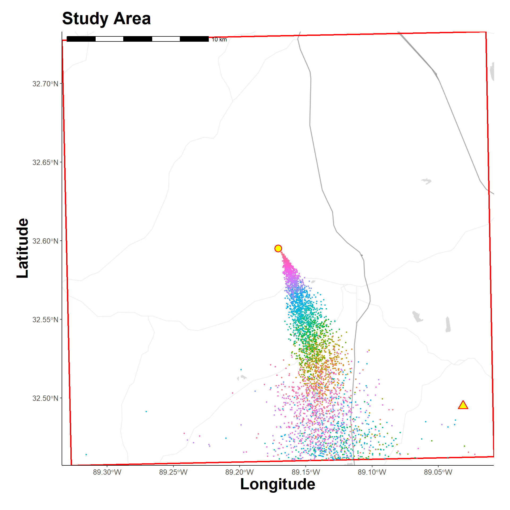
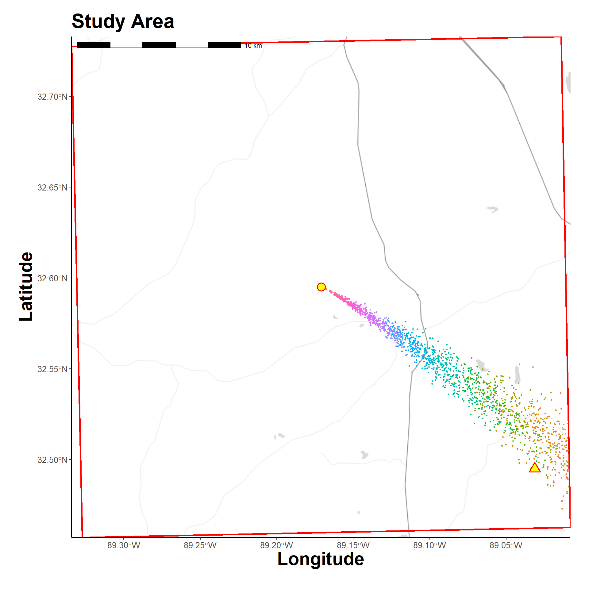
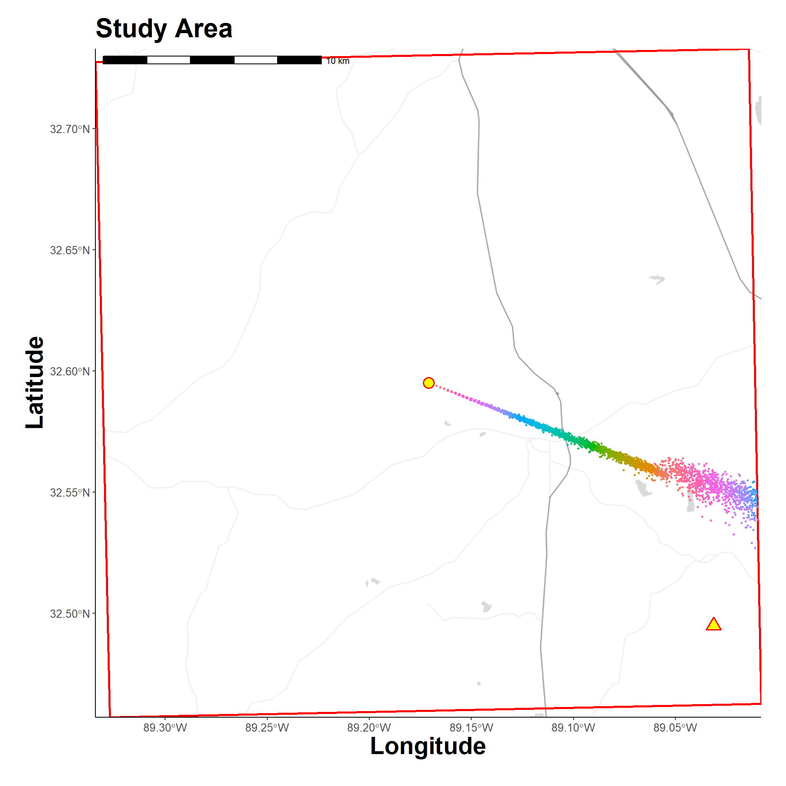

Identify and Trace Plume Emission Source
Overview
This script provides a conceptual workflow that backtraces or verifies the source farm that instigated secondary outbreaks at other farms through atmospheric dispersion of virus. That is, the script looks at data from a secondary outbreak and attempts to determine what source farm emitted the virus that seeded virus introduction. This script moves backward in time to identify the source of a pathogenic plume.
The companion and preceding script for this analysis is available here, Simulated Outbreak. That analysis moves forward in time to model what farms could have been subject to pathogen invasion after plume emission from a source farm. This preliminary script provides a more intuitive overview than the current one which requires a hindsight perspective.
Preliminary Setup
Libraries
This workflow uses the renv package for package versioning and environmental management. The renv.lock file is included to facilitate package installain. See, renv::restore().
Core Functions
Custom functions
Hide code
source(here("R/utilities.R"))
source_dir(here("R"))Authentication
User credentials to access data repository and API resources.
Hide code
authentications <- yaml::read_yaml(here("local", "secrets.yaml"))API Registration
Stadia maps are used for backgrounds.
Hide code
register_stadiamaps(key = authentications$stadi_api)OSF Link
Models and data generated from this script are stored at the Open Science Framework (OSF) for remote access. See, this OSF Project: https://osf.io/98hmt/
Hide code
osf_auth(authentications$osf_token) # for write/admin privilegesRegistered PAT from the provided tokenHide code
osf_project_demo <- osf_retrieve_node("https://osf.io/su4yz/")
osf_project_demo$name # scratch directory on OSF EpiPlume project[1] "Demonstration Data"Read Configuration Parameters
Parameters for epidemiological and spatial analyses are recorded in configuration files. Loading the demonstration config file, which can be viewed here: Demo Configuration Parameters.
Hide code
cfg <- yaml::read_yaml(here("config", "demo_2025-04-21.yaml"))Simulated Outbreak
Downloading and reading the data frame resulting from forward simulation in the Simulated Outbreak script. This file has the coordinates and outbreak detection date for the secondarily infected farms (only one in this demo run) and source farm.
Hide code
osf_id <- osf_project_demo %>%
osf_ls_files() %>%
filter(name == "demo_outbreak_sim_2025-04-28.csv")
osf_download(osf_id,
path = here("local/temp"),
conflicts = "overwrite")| name | id | local_path | meta |
|---|---|---|---|
| demo_outbreak_sim_2025-04-28.csv | 680faa9b91b1af0e5e7c5bb0 | local/temp/demo_outbreak_sim_2025-04-28.csv | demo_outbreak_sim_2025-04-28.csv , file , /680faa9b91b1af0e5e7c5bb0 , 1414 , osfstorage , /demo_outbreak_sim_2025-04-28.csv , 1745857179 , 1745857179 , 13361dc0fd02ffb1c1b27224e97d7469 , 1201290c6e31d84d575f9ad16d5c62ce9de5b16256a4d125933476e7bd3a7833 , 0 , TRUE , 1 , FALSE , https://api.osf.io/v2/files/680faa9b91b1af0e5e7c5bb0/ , https://files.osf.io/v1/resources/su4yz/providers/osfstorage/680faa9b91b1af0e5e7c5bb0 , https://files.osf.io/v1/resources/su4yz/providers/osfstorage/680faa9b91b1af0e5e7c5bb0 , https://files.osf.io/v1/resources/su4yz/providers/osfstorage/680faa9b91b1af0e5e7c5bb0 , https://osf.io/download/680faa9b91b1af0e5e7c5bb0/ , https://mfr.osf.io/render?url=https%3A%2F%2Fosf.io%2Fdownload%2F680faa9b91b1af0e5e7c5bb0%2F%3Fdirect%26mode%3Drender, https://osf.io/su4yz/files/osfstorage/680faa9b91b1af0e5e7c5bb0 , https://api.osf.io/v2/files/680faa9b91b1af0e5e7c5bb0/ , https://api.osf.io/v2/files/680c0182fd8f8cdc22d2b775/ , 680c0182fd8f8cdc22d2b775 , files , https://api.osf.io/v2/files/680faa9b91b1af0e5e7c5bb0/versions/ , https://api.osf.io/v2/nodes/su4yz/ , su4yz , nodes , https://api.osf.io/v2/nodes/su4yz/ , nodes , nodes , su4yz , https://api.osf.io/v2/files/680faa9b91b1af0e5e7c5bb0/cedar_metadata_records/ |
Hide code
simulated_outbreaks <- read.csv(here("local/temp/demo_outbreak_sim_2025-04-28.csv")) %>%
filter(!is.na(outbreak)) # keeping only farms that experienced outbreakConvert to Points
Data frame to spatial points
Hide code
# Long/Lat
farm_points_wgs84 <- vect(simulated_outbreaks,
geom = c("x", "y"),
crs = "EPSG:4326")Get metadata for simulated farms
Hide code
outbreak_farm_meta <- as.data.frame(farm_points_wgs84, geom="xy") %>%
filter(name != "source_farm") %>%
select(-X) # row names
orig_source_meta <- as.data.frame(farm_points_wgs84, geom="xy") %>%
filter(name == "source_farm") %>%
select(-X) Create Study Area
Defining a study area extent (raster grid) with the secondary outbreak farm at center. The original source farm is also depicted as reference. The define_study_domain() identifies the appropriate UTM and returns projected objects.
Hide code
study_area_args <- c(
list(
source_origin = c(outbreak_farm_meta$x, outbreak_farm_meta$y),
extent_km = cfg$domain$extent_km,
res_m = cfg$domain$res_m
)
)
study_area <- exec(define_study_domain, !!!study_area_args)
# projected UTM
farm_points <- project(farm_points_wgs84, crs(study_area$projection))Plot study area
The circle at center is the secondarily infected farm; the goal is to look backward in time to demonstrate that the source farm (triangle, lower right) emitted the plume that gave rise to the outbreak at the center.
Hide code
map_grid(study_area$grid, source_loc = farm_points)
Trajectory Models
A HYSPLIT model is constructed assuming the secondary outbreak location was a receptor of the plume from an unknown source. The splitR package is used to call a HYSPLIT exceutable from R.
Time limit to download meteorological data.
Hide code
getOption("timeout")[1] 60Hide code
options(timeout=10000)Date Determination
Determine dates and times to evaluate. Although it is known when the outbreak was detected at the secondary farm, it is not known when the virus was introduced nor when initial infection occurred. In practice, poultry workers would likely only detect an outbreak once the rate of daily chicken mortality sufficiently and consistently (multiple days) exceeded that typical background rate. In this example, it’s assumed that latent periods and initial spread from a single chicken took at least 3 days (earliest possible detection), but may have taken 20 days to detect. Therefore, this demo analyses more than two weeks in the past.
Hide code
model_name <- gsub("_", "", outbreak_farm_meta$name) # 6 characters max
model_name[1] "farm18"Hide code
earliest_date <- as_date(outbreak_farm_meta$outbreak) - days(20) # assuming slow to detect
latest_date <- as_date(outbreak_farm_meta$outbreak) - days(3) # allowing for at least 2 day latent period and 1 day infectious
dates_to_check <- seq(earliest_date, latest_date, by = 1)
length(dates_to_check) # total days to model[1] 18Run Trajectory Model
The wrap_trajectory_model() saves locally, but a copy is also saved to OSF for others to use. There are a ton of parameter assumptions here to discuss. Brief explanations are provided with the config file (linked here), but its too much for this draft workflow.
This model estimates four trajectories per day (every 6 hours) for each of the 18 days, for a a total of 72 trajectories.
Hide code
traj_model <- wrap_trajectory_model(cfg, # configuration file
traj_name = model_name,
lon = outbreak_farm_meta$x, # simulated outbreak farm
lat = outbreak_farm_meta$y, # simulated outbreak farm
height = cfg$trajectory$traj_height,
duration = cfg$trajectory$traj_duration,
days = dates_to_check, # days to assess based on simulated outbreak timeline
daily_hours = cfg$trajectory$daily_hours,
model_height = cfg$trajectory$model_height,
direction = cfg$trajectory$traj_direction,
extended_met = cfg$trajectory$extended_met,
vert_motion = cfg$trajectory$vert_motion,
met_type = cfg$trajectory$traj_met_type,
met_dir = here(cfg$trajectory$traj_climate),
exec_dir = here(cfg$trajectory$traj_outputs),
clean_up = cfg$trajectory$traj_clean_up
)
# save copy to OSF
osf_upload(osf_project_demo, path = here("local/demo_run/traj/farm18_model.rds"))Download trajectory model from OSF (if not run locally)
Hide code
osf_id <- osf_project_demo %>%
osf_ls_files() %>%
filter(name == "farm18_model.rds")
osf_download(osf_id,
path = here("local/temp"),
conflicts = "overwrite")Read the pre-run trajectory model
Hide code
traj_model <- readRDS(here("local/temp/farm18_model.rds"))Plot hindcast trajectories
Each line is a trajectory extending from the secondarily infected farm (center) that follows atmospheric characteristics for the hind cast date and time. This plot shows the complete trajectory.
Hide code
map_grid2(study_area$grid, traj_model$traj_df, group_col = "run", vector_type = "line", grid_cut = FALSE)
The trajectories in this plot are cropped to the extent of study area with option grid_cut to better see individual paths.
Question: Do any of these trajectories help identify and confirm the source farm?
Hide code
map_grid3(study_area$grid, traj_model$traj_df, group_col = "run", vector_type = "line", source_loc = farm_points_wgs84, grid_cut = TRUE)
Spatial Analysis
A couple basic steps to compare distances between the source farm and possible trajectories from the secondary outbreak farm.
Measure distances
The measure_proximty() function measures distances for both the trajectory lines and point outputs.
Hide code
traj_dists <- measure_proximty(
target_location = c(orig_source_meta$x, orig_source_meta$y), # suspected source farm
traj_model = traj_model,
projection = study_area$projection
)Inverse Distance Decay
Apply an inverse distance decay function assuming that trajectory probability decreases the further from the source farm it is:
w(d) = \exp(-\lambda \times d)
where:
- w(d) is the weight (between 0 and 1),
- d is the distance in meters between the source and the trajectory,
- \lambda is a decay rate parameter, how quickly the weight decreases with distance.
Hide code
distance_threshold <- 10000 # meters, 10k, decreasing probability of trajectory after this distance
lambda_value <- calibrate_lambda(distance_threshold, weight_target = 0.5) # find the best lambda with 10k as the median probabilityShow the relationship (green is the lambda_value).
Hide code
plot_distance_decay(
lambda_target = lambda_value,
weight_target = 0.5 # median probability
)Warning: Using `size` aesthetic for lines was deprecated in ggplot2 3.4.0.
ℹ Please use `linewidth` instead.
Score and Subset
Calculate the probability for each modeled trajectory
Hide code
traj_dists$traj_lines$score <- calculate_inverse_distance_weight(traj_dists$traj_lines$distance_m,
lambda = lambda_value) # score distancesSelect trajectories with at least a 90% probability.
Hide code
closest_traj_line <- as.data.frame(traj_dists$traj_lines) %>%
filter(score >= 0.9) %>%
arrange(desc(score)) %>%
select(run, distance_m, score)Filter trajectory data to possible distances.
Hide code
runs_50 <- unique(closest_traj_line$run)
possible_dates <- vect(traj_dists$traj_point)
possible_dates <- project(possible_dates, "EPSG:4326" )
possible_dates <- as.data.frame(possible_dates,
geom="xy") %>%
mutate(lon = x, lat = y) %>%
filter(run %in% runs_50)The above reduced 72 possible trajectories to 1970-01-07, 1970-01-11, 1970-01-16, 1970-01-17 probable ones. Show here:
Hide code
map_grid3(study_area$grid, possible_dates, group_col = "run", vector_type = "line", source_loc = farm_points_wgs84, grid_cut = TRUE)
Receptor Return
Having narrowed possible trajectory dates and times that could have produced the infecting plume, reverse plumes are simulated from the secondary outbreak farm (receptor) to the original source (nackwards in time).
Execute plume model runs in a loop.
Hide code
possible_datetimes <- possible_dates %>%
mutate(date = as.Date(traj_dt)) %>%
group_by(date) %>%
summarise(start = min(traj_dt)) %>%
as.data.frame()
for(i in 1:unique(possible_datetimes$start)){
plume_name <- paste0("plume_", i)
plume_model <- wrap_plume_model(cfg, # configuration file
plume_name = plume_name, # name/label
lon = outbreak_farm_meta$x, # secondary outbreak farm
lat = outbreak_farm_meta$y, # secondary outbreak farm
direction = "backward", # from receptor back in time
release_start = possible_datetimes$start[i], # release from source farm
release_end = possible_datetimes$start[i] - hours(1), # reverse time
start_time = possible_datetimes$start[i], # dispersion time same as emission
end_time = possible_datetimes$start[i] - hours(24) # dispersion end
)
}
# copy to OSF
osf_upload(osf_project_demo, path = here("local/demo_run/plume/plume_1_model.rds"))
osf_upload(osf_project_demo, path = here("local/demo_run/plume/plume_2_model.rds"))
osf_upload(osf_project_demo, path = here("local/demo_run/plume/plume_3_model.rds"))Download from OSF
Hide code
osf_id <- osf_project_demo %>%
osf_ls_files() %>%
filter(name == "plume_1_model.rds" |
name == "plume_2_model.rds" |
name == "plume_3_model.rds")
osf_download(osf_id,
path = here("local/temp"),
conflicts = "overwrite")Read plume models
Hide code
plume_1 <- readRDS(here("local/temp/plume_1_model.rds"))
plume_2 <- readRDS(here("local/temp/plume_2_model.rds"))
plume_3 <- readRDS(here("local/temp/plume_3_model.rds"))Plume 1 simulated dispersion
Hide code
map_grid3(study_area$grid, plume_1$disp_df, group_col = "particle_i", vector_type = "point", source_loc = farm_points_wgs84, grid_cut = TRUE)
Plume 2 simulated dispersion
Hide code
map_grid3(study_area$grid, plume_2$disp_df, group_col = "particle_i", vector_type = "point", source_loc = farm_points_wgs84, grid_cut = TRUE)
Plume 3 simulated dispersion
Hide code
map_grid3(study_area$grid, plume_3$disp_df, group_col = "particle_i", vector_type = "point", source_loc = farm_points_wgs84, grid_cut = TRUE)